default student balance income
1 No No 729.5265 44361.625
2 No Yes 817.1804 12106.135
3 No No 1073.5492 31767.139
4 No No 529.2506 35704.494
5 No No 785.6559 38463.496
6 No Yes 919.5885 7491.559Métodos supervisados
IND 163 - 2022/02
Eloy Alvarado Narváez
Universidad Técnica Federico Santa María
14/10/22
Métodos supervisados
Introducción
Como hemos mencionado a lo largo del curso, una regresión lineal simple asume que la variable respuesta \(Y\) es cuantitativa, pero en muchas situaciones esta es cualitativa (también referida como categórica). En lo que sigue, veremos métodos para predecir respuestas cualitativas, más comúnmente llamado clasificación.
Existen mucha técnicas de clasificación o clasificadores, que se pueden usar para predecir una variable cualitativa. Entre ellos se encuentras:
Regresión logística
Análisis discriminante lineal
k-NN (k- nearest neighbors / k-vecinos cercanos)
Modelos generalizados aditivos
Árboles y bosques aleatorios
Boosting
SVM
Ejemplo
Ejemplo: continuación
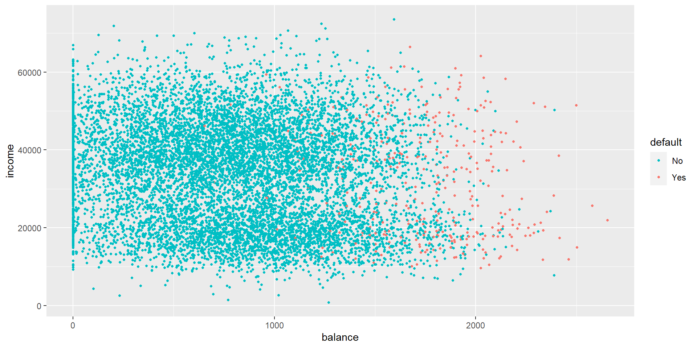Ejemplo: continuación
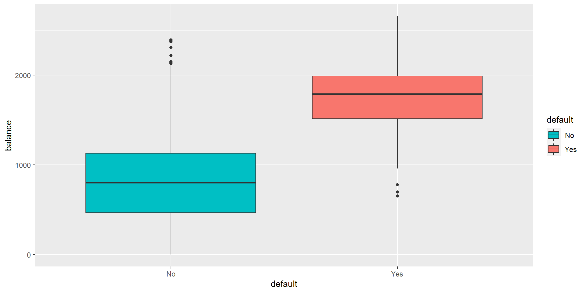Ejemplo: continuación
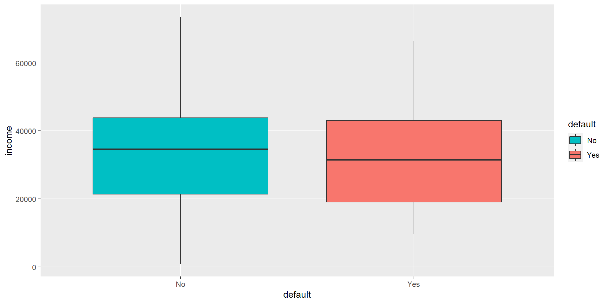¿Por qué no usar una regresión lineal?
Supongamos que se intenta predecir la condición médica de un paciente en la sala de emergencia con base a sus síntomas. Para simplificar, imaginemos que sólo que tienen 3 posibles diagnósticos: accidente cardiovascular, sobredosis y ataque epiléptico. Por lo que podríamos clasificar la variable respuesta como
\[ Y=\begin{cases} 1 \quad \text{si Accidente cardiovascular}\\ 2 \quad \text{si Sobredosis} \\ 3 \quad \text{si Ataque epiléptico} \end{cases} \]
Usando esta codificación, se puede usar el método de mínimos cuadrados para ajustar una regresión lineal para predecir \(Y\) en base a los predictores \(X_1,\dots, X_p\).
¿Por qué no usar una regresión lineal?: continuación
Desafortunadamente, esta codificación implica un ordenamiento de las salidas, estableciendo sobredosis entre accidente cardiovascular y Ataque epiléptico, e inherentemente afirmando que la diferencia entre categorías contiguas son la misma.
Es claro notar que si usamos otra codificación, el ajuste de regresión lineal obtenido será diferente al primero. En general, no hay una forma natural de convertir una variable respuesta cualitativa con más de dos niveles en una variable cuantitativa que esté lista para hacer una regresión lineal.
¿Por qué no usar una regresión lineal?: continuación
En el caso de variable respuesta binaria, la situación es algo más favorable, debido a que si se cambia la codificación, el ajuste de regresión obtenido será el mismo. Sin embargo, el método de mínimos cuadrados no tiene sentido, provocando que algunas de nuestras estimación estén fuera del intervalo [0,1], haciendo difícil la interpretación de las probabilidades.
Lo anterior debido a que se puede mostrar que el \(X\hat{\beta}\) obtenido con la regresión lineal con codificación binaria, es simplemente una estimación de \(\mathbb{P}(\text{Sobredosis})\) si la codificación es
\[ Y = \begin{cases} 0 \quad \text{si Accidente cardiovascular}\\ 1 \quad \text{si Sobredosis} \end{cases} \]
Regresión logística
Usando el mismo conjunto de datos Default, donde la variable respuesta default cae dentro de dos categorías Yes y No. En vez de modelar la respuesta \(Y\) directamente, la regresión logística modela la probabilidad que \(Y\) pertenezca a una categoría particular.
Para el conjunto de datos Default, la regresión logística modela la probabilidad de que haya default (morosidad). Por ejemplo, la probabilidad de default dado cierto balance puede ser escrito como
\[ \mathbb{P}( \text{default}=\text{Yes}|\text{balance}) \]
Los valores de esta probabilidad, que la abreviamos como \(p(\text{balance})\), estarán entre 0 y 1. Por lo que para un valor particular de balance, se puede hacer una predicción para default. Por ejemplo, se podría predecir que default=Yes para cualquier individuo cuyo \(p(\text{balance})>0.5\). Alternativamente, si una compañía quisiese ser más conservador en la predicción, podría definir \(p(\text{balance})>0.1\).
Modelo logístico
¿Cómo deberíamos modelar la relación entre \(p(X)=\mathbb{P}(Y=1|X)\) y \(X\)?
Podemos utilizar un enfoque de regresión lineal para representar estar probabilidades, esto es:
\[ p(X)=\beta_0 + \beta_1 X \]
Si usamos este enfoque para predecir default=Yes usando balance, entonces obtendremos el siguiente modelo.
Modelo logístico: continuación
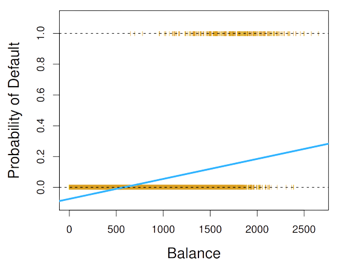Modelo logístico: continuación
Para evitar lo anterior, debemos modelar \(p(X)\) usando una función que entregue salidas entre 0 y 1 para todos los valores de \(X\). Muchas funciones cumplen estas condiciones. En una regresión logística, usamos la función logística.
\[ p(X)=\dfrac{\exp(\beta_0 + \beta_1 X)}{1+\exp(\beta_0 + \beta_1 X)} \]
Para ajustar el modelo anterior, usamos el método de máxima verosimilitud.
Modelo logístico: continuación
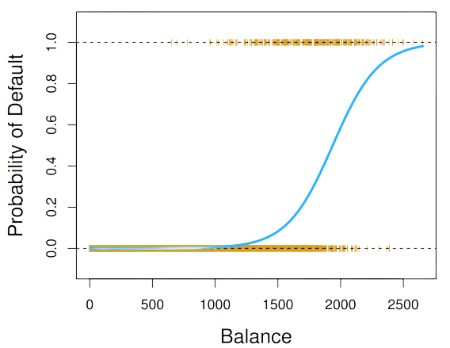Modelo logístico: continuación
Manipulando un poco la fórmula anterior, se tiene que
\[ \dfrac{p(X)}{1-p(X)}=\exp(\beta_0 + \beta_1 X) \]
La cantidad \({p(X) \over 1-p(X)}\) se le llaman odds, que pueden toman cualquier valor en \(\mathbb{R}^{+}\). Valores cercanos a cero y tendiendo a infinito, indican muy baja y alta probabilidad de default, respectivamente.
Modelo logístico: continuación
Tomando el logaritmo en ambos lados, se tiene
\[ \log \left(\dfrac{p(X)}{1-p(X)}\right)=\beta_0 + \beta_1 X \]
a esta cantidad la llamamos log-odds o logit. Notamos que el modelo de regresión logística tiene un logit lineal en \(X\).
Estimación de los coeficientes de regresión
Los coeficiente \(\beta_0\) y \(\beta_1\) en la ecuación
\[ p(X)=\dfrac{\exp(\beta_0 + \beta_1 X)}{1+\exp(\beta_0 + \beta_1 X)} \]
son desconocidos, por lo que deben ser estimados basándose en los datos de entrenamiento. Si bien podríamos ocupar una metodología de métodos cuadrados no lineales para ajustar el modelo:
\[ \log \left(\dfrac{p(X)}{1-p(X)}\right)=\beta_0 + \beta_1 X \]
La metodología de máxima verosimilitud es usualmente preferida, debido a que tiene mejores propiedades estadísticas.
Estimación de los coeficientes de regresión: continuación
Formalmente, definimos la función de verosimilitud como:
\[ \ell(\beta_0,\beta_1)=\prod_{i:y_i=1}p(x_i)\prod_{i':y_{i'}=0}(1-p(x_{i'})) \]
Las estimaciones \(\hat{\beta}_0\) y \(\hat{\beta}_1\) son escogidos para maximizar la función de verosimilitud.
Ejemplo
Call:
glm(formula = default ~ balance, family = "binomial", data = data)
Deviance Residuals:
Min 1Q Median 3Q Max
-2.2697 -0.1465 -0.0589 -0.0221 3.7589
Coefficients:
Estimate Std. Error z value Pr(>|z|)
(Intercept) -1.065e+01 3.612e-01 -29.49 <2e-16 ***
balance 5.499e-03 2.204e-04 24.95 <2e-16 ***
---
Signif. codes: 0 '***' 0.001 '**' 0.01 '*' 0.05 '.' 0.1 ' ' 1
(Dispersion parameter for binomial family taken to be 1)
Null deviance: 2920.6 on 9999 degrees of freedom
Residual deviance: 1596.5 on 9998 degrees of freedom
AIC: 1600.5
Number of Fisher Scoring iterations: 8Predicciones
Una vez que los coeficientes han sido estimados, lo que resta es calcular la probabilidad de default para una balance dado. Por ejemplo, la predicción para una persona con balance \(\$1000\) es
\[ \hat{p}(X)=\dfrac{\exp(-10.65+ 0.0055 \times 1000)}{1+\exp(-10.65+ 0.0055 \times 1000)}\approx 0.00576 \]
que es bajo \(1\%\). En contraste con alguien que adeuda \(\$2000\), en cuyo caso \(\hat{p}(X)=0.586\).
Predicciones: continuación
Si utilizamos dummy variables para el predictor student codificado como 0 y 1. tendremos el siguiente ajuste
Call:
glm(formula = default ~ student, family = "binomial", data = data)
Deviance Residuals:
Min 1Q Median 3Q Max
-0.2970 -0.2970 -0.2434 -0.2434 2.6585
Coefficients:
Estimate Std. Error z value Pr(>|z|)
(Intercept) -3.50413 0.07071 -49.55 < 2e-16 ***
studentYes 0.40489 0.11502 3.52 0.000431 ***
---
Signif. codes: 0 '***' 0.001 '**' 0.01 '*' 0.05 '.' 0.1 ' ' 1
(Dispersion parameter for binomial family taken to be 1)
Null deviance: 2920.6 on 9999 degrees of freedom
Residual deviance: 2908.7 on 9998 degrees of freedom
AIC: 2912.7
Number of Fisher Scoring iterations: 6Predicciones: continuación
Así, podemos calcular las probabilidades
\[ \mathbb{P}\left( \text{default=Yes }| \text{ student=Yes}\right)=\dfrac{\exp(-3.5041+ 0.4049 \times 1)}{1+\exp(-3.5041+ 0.4049 \times 1)}\approx 0.0431 \]
y,
\[ \mathbb{P}\left( \text{default=Yes }| \text{ student=No}\right)=\dfrac{\exp(-3.5041+ 0.4049 \times 0)}{1+\exp(-3.5041+ 0.4049 \times 0)}\approx 0.0292 \]
Regresión logística múltiple
Ahora consideramos el problema de predecir una respuesta binaria usando múltiples predictores. La extensión natural del modelo de regresión es
\[ \log \left(\dfrac{p(X)}{1-p(X)}\right)=\beta_0 + \beta_1 X_1 +\dots + \beta_p X_p \]
donde \(X=(X_1,\dots,X_p)\) son \(p\) predictores. La ecuación anterior la podemos reescribir como
\[ p(X)=\dfrac{\exp(\beta_0 + \beta_1 X_1 +\dots + \beta_p X_p)}{1+ \exp(\beta_0 + \beta_1 X_1 +\dots + \beta_p X_p)} \]
Al igual que antes, usamos el método de máxima verosimilitud para estimar \(\mathbf{\beta}\).
Ejemplo
Call:
glm(formula = default ~ balance + student + income, family = "binomial",
data = data)
Deviance Residuals:
Min 1Q Median 3Q Max
-2.4691 -0.1418 -0.0557 -0.0203 3.7383
Coefficients:
Estimate Std. Error z value Pr(>|z|)
(Intercept) -1.087e+01 4.923e-01 -22.080 < 2e-16 ***
balance 5.737e-03 2.319e-04 24.738 < 2e-16 ***
studentYes -6.468e-01 2.363e-01 -2.738 0.00619 **
income 3.033e-06 8.203e-06 0.370 0.71152
---
Signif. codes: 0 '***' 0.001 '**' 0.01 '*' 0.05 '.' 0.1 ' ' 1
(Dispersion parameter for binomial family taken to be 1)
Null deviance: 2920.6 on 9999 degrees of freedom
Residual deviance: 1571.5 on 9996 degrees of freedom
AIC: 1579.5
Number of Fisher Scoring iterations: 8Ejemplo: continuación
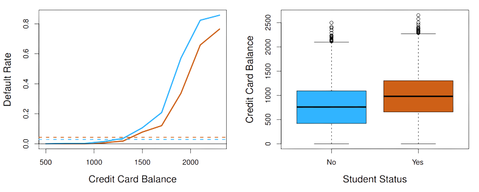Regresión logística para \(>2\) clases en la respuesta
En el caso en que tengamos más de dos clases en la variable respuesta, es posible extender la regresión lineal. En el ejemplo de determinación de diagnóstico en una sala de emergencia se tenían las categorías accidente cardiovascular, sobredosis y ataque epiléptico, por lo que se desearía modelar
\[ \mathbb{P}\left( Y= \text{ acc. card. }| X\right) \]
y
\[ \mathbb{P}\left( Y= \text{ sobredosis }| X\right) \]
siendo el remanente,
\[ \mathbb{P}\left( Y= \text{ ataque epiléptico }| X\right)= 1-\mathbb{P}\left( Y= \text{ acc. card }| X\right)-\mathbb{P}\left( Y= \text{ sobredosis }| X\right) \]
Si bien es posible la extensión, en la práctica no es frecuentemente usado, pues se prefiere realizar un análisis discriminante.
Análisis discriminante lineal
Introducción
La regresión logística que vimos antes involucra modelar directamente \(\mathbb{P}\left( Y=k|X=x\right)\) usando la función logística dada por
\[ p(X)=\dfrac{\exp(\beta_0 + \beta_1 X_1 +\dots + \beta_p X_p)}{1+ \exp(\beta_0 + \beta_1 X_1 +\dots + \beta_p X_p)} \]
para el caso de dos clases en la variable respuesta. En lo que sigue, consideramos una manera alternativa y menos directa para estimar estas probabilidades. En esta metodología, modelamos la distribución de los predictores \(X\) por separado en cada una de las categorías de la variable respuesta \((Y)\), y luego usamos el teorema de Bayes para convertir estos resultados en estimaciones de \(\mathbb{P}\left(Y=k|X=x\right)\).
Cuando estas distribuciones se asumen normales, la forma de este modelo es muy similar a una regresión logística.
Teorema de Bayes para clasificación
Supongamos que queremos clasificar una observación entre \(K\) clases, donde \(K\geq 2\). Esto es, que la variable respuesta \(Y\) puede tomar \(K\) posibles valores distintos y no-ordenados.
Sea \(\pi_k\) la probabilidad apriori que una observación escogida aleatoriamente provenga de la clase \(k-\)ésima. Sea \(f_k(X)=\mathbb{P}(X=x|Y=k)\) la función de densidad de \(X\) para una observación que proviene de la clase \(k-\)ésima. Luego, por el teorema de Bayes se tiene
\[ \mathbb{P}(Y=k|X=x)=\dfrac{\pi_k f_k(x)}{\sum_{l=1}^{K} \pi_l f_l(x)} \]
al igual que antes usamos la notación \(p_k(X)=\mathbb{P}(Y=k|X)\).
Teorema de Bayes para clasificación: continuación
La idea general, es no estimar \(p_k(X)\) directamente, sino estimar \(\pi_k\) y \(f_k\) para obtener lo deseado.
Usualmente \(\pi_k\) es fácil de obtener si se tiene una muestra aleatoria de \(Y\), pues obtenemos estas estimaciones como las proporciones de cada clase.
En cambio, estimar \(f_k(X)\) tiende a ser más difícil, a menos que se asuman formas simples para las densidades.
Llamamos a la cantidad \(p_k(x)\) la probabilidad posterior que una observación \(X=x\) pertenezca a la clase \(k-\)ésima.
Análisis discriminante lineal con \(p=1\)
Primero asumiremos que \(p=1\), es decir, sólo tenemos un predictor. Deseamos obtener una estimación para \(f_k(x)\) para utilizarlo en la ecuación
\[ \mathbb{P}(Y=k|X=x)=\dfrac{\pi_k f_k(x)}{\sum_{l=1}^{K} \pi_l f_l(x)} \]
y así poder estimar \(p_k(x)\). Para poder estimar \(f_k\), primero debemos asumir su forma, por lo que asumiremos que \(f_k\) es Gaussiana. Por lo que,
\[ f_k(x)=\dfrac{1}{\sqrt{2\pi}\sigma_k}\exp\left( -\dfrac{1}{2\sigma_{k}^{2}}(x-\mu_k)^2\right) \]
donde \(\mu_k\) y \(\sigma_{k}^{2}\) son la media y la varianza de la clase \(k-\)ésima. Por ahora, asumiremos que \(\sigma_{1}^{2}=\dots=\sigma_{K}^{2}=\sigma^2\)
Análisis discriminante lineal con \(p=1\): continuación
Por lo anterior, se tendrá
\[ p_k(x)=\dfrac{\pi_k \dfrac{1}{\sqrt{2\pi}\sigma}\exp\left( -\dfrac{1}{2\sigma^{2}}(x-\mu_k)^2\right)}{\sum_{l=1}^{K}\pi_l\dfrac{1}{\sqrt{2\pi}\sigma}\exp\left( -\dfrac{1}{2\sigma^{2}}(x-\mu_l)^2\right) } \]
El clasificador Bayesiano asigna una observacion \(X=x\) a la clase que su \(p_k(x)\) es más grande. Si tomamos el logaritmo y arreglamos términos en la expresión anterior, se tiene que el proceso es equivalente a asignar la observación a la clase en la que
\[ \delta_k(x)=x \dfrac{\mu_k}{\sigma^2}-\dfrac{\mu_{k}^{2}}{2\sigma^2}+\log \pi_k \]
es más grande.
Análisis discriminante lineal con \(p=1\): continuación
Por ejemplo, si \(K=2\) Y \(\pi_1=\pi_2\), entonces el clasificador Bayesiano asigna una observación a la clase 1 si \(2x(\mu_1-\mu_2)>\mu_{1}^{2}-\mu_{2}^{2}\) y a la clase 2 en caso contrario. En este caso, el límite de decisión de Bayes (Bayes decision boundary) corresponde al punto donde
\[ x=\dfrac{\mu_{1}^{2}-\mu_{2}^{2}}{2(\mu_1-\mu_2)}=\dfrac{\mu_1+\mu_2}{2} \]
Llamamos a este, el punto (o área) en donde la clasificación es ambigua.
Análisis discriminante lineal con \(p=1\): continuación
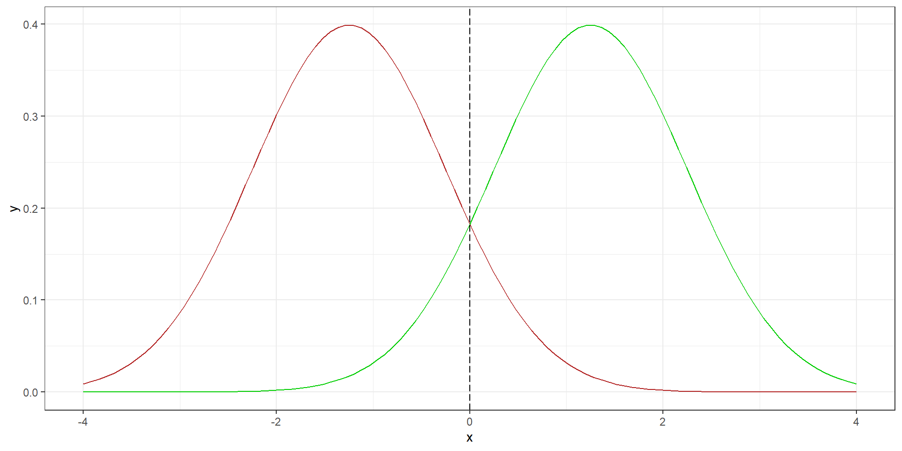Análisis discriminante lineal con \(p=1\): continuación
El análisis discriminante lineal (LDA) aproxima el clasificador bayesiano ingresando estimaciones para \(pi_k,\mu_k\) y \(\sigma^2\) en \(\delta_k(x)\). Particularmente, las siguientes estimaciones son usadas.
\[ \hat{\mu}_k=\dfrac{1}{n_k}\sum_{i:y_i=k}x_i \]
y,
\[ \hat{\sigma}^{2}=\dfrac{1}{n-K}\sum_{k=1}^{K}\sum_{i:y_i=K}(x_i-\hat{\mu}_k)^2 \]
donde \(n\) es el número total de observaciones en el conjunto de entrenamiento, \(n_k\) es el número de observaciones en el conjunto de entrenamiento en la clase \(k-\)ésima.
Análisis discriminante lineal con \(p=1\): continuación
En el caso de que no tengamos información de \(\pi_1,\dots,\pi_K\), el análisis discriminante lineal estima \(\pi_k\) usando la proporción de las observaciones en el conjunto de entrenamiento que pertenece a la clase \(k-\)ésima. Esto es,
\[ \hat{\pi}_k=\dfrac{n_k}{n} \]
El clasificador LDA reemplaza las estimaciones anteriores en \(\delta_k(x)\) y asigna una observación \(X=x\) a la clase en la cual
\[ \hat{\delta}_k=x\dfrac{\hat{\mu}_k}{\hat{\sigma}^2}-\dfrac{\hat{\mu}_{k}^{2}}{\hat{2\sigma}^2}+\log \hat{\pi}_k \]
es más grande. El nombre de lineal viene de la linealidad de la función discriminante \(\hat{\delta}_k\) para \(x\).
Análisis discriminante lineal con \(p=1\): continuación
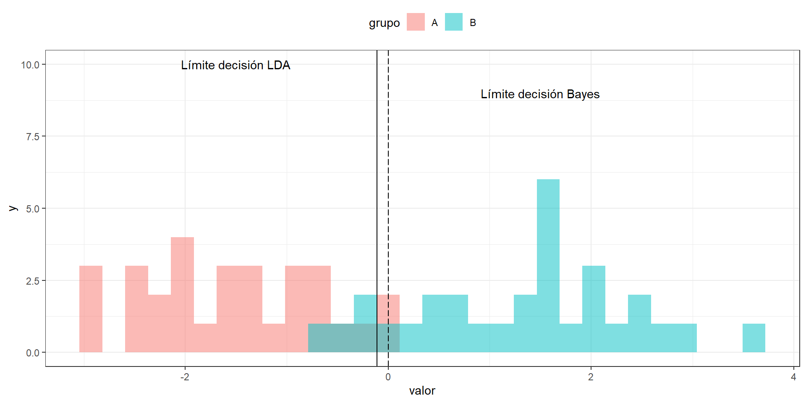Análisis discriminante lineal con \(p>1\)
En lo que sigue, vamos a extender las nociones de análisis discriminante cuando se tienen múltiples predictores, para ello asumiremos que \(X=(X_1,X_2,\dots,X_p)\) es obtenido desde una distribución normal multivariada, con medias por clase e igual matriz de varianza-covarianza.
Recordar que si \(X\sim N(\mu,\Sigma)\) con \(\mathbb{E}(X)=\mu\) (vector de medias) y \(Cov(X)=\Sigma\) la matriz \(p\times p\) de covarianza de \(X\). Formalmente, la densidad de \(X\) se define como:
\[ f(x)=\dfrac{1}{(2\pi)^{p/2}|\Sigma|^{1/2}}\exp\left( -\dfrac{1}{2}(x-\mu)^{T} \Sigma^{-1}(x-\mu)\right) \]
En el caso de \(p>1\) predictores, el análisis discriminante lineal asume que las observaciones en la clase \(k-\)ésima son obtenidos desde una distribución normal multivariada.
Análisis discriminante lineal con \(p>1\): continuación
Si reemplazamos la función de densidad para la clase \(k-\)ésima, \(f_k(X=x)\) en la ecuación
\[ \mathbb{P}(Y=k|X=x)=\dfrac{\pi_k f_k(x)}{\sum_{l=1}^{K} \pi_l f_l(x)} \]
y usando un poco de álgebra, se puede reescribir \(\delta_k(x)\) como
\[ \delta_k(x)=x^T\Sigma^{-1} \mu_k-\dfrac{1}{2}\mu_{k}^{T} \Sigma^{-1} \mu_k +\log \pi_k \]
y el clasificador bayesiano asigna la observación \(X=x\) a la clase que tienen mayor \(\delta_{k}(x)\).
Análisis discriminante lineal con \(p>1\): continuación
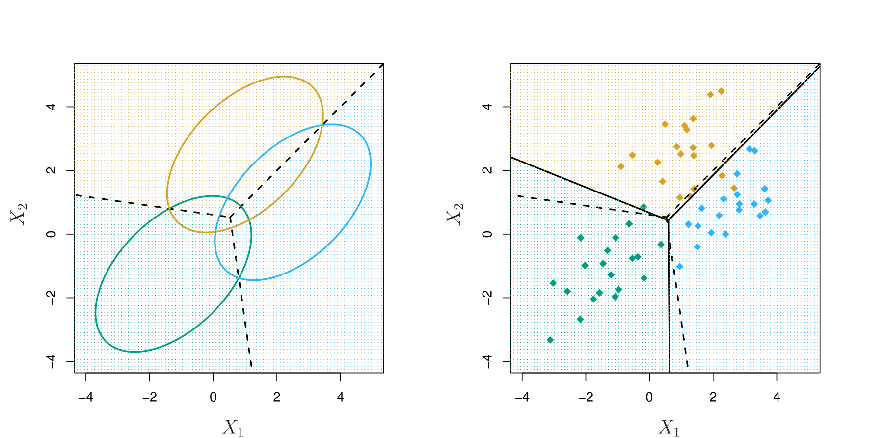Análisis discriminante lineal con \(p>1\): continuación
En la figura anterior, las elipses representan las regiones que contienen \(95\%\) de la probabilidad de cada una de las clases. Al igual que antes, la línea punteada es el Límite de decisión Bayes. Es decir, representan el conjunto de valores \(x\) para los cuales \(\delta_k(x)=\delta_\ell(x)\), esto es:
\[ x^T\Sigma^{-1} \mu_k-\dfrac{1}{2}\mu_{k}^{T} \Sigma^{-1} \mu_k=x^T\Sigma^{-1} \mu_l-\dfrac{1}{2}\mu_{l}^{T} \Sigma^{-1} \mu_l \]
para \(k\neq l\).
Ejemplo
library(MASS)
mod_lda <- lda(Species ~ Sepal.Width + Sepal.Length + Petal.Length + Petal.Width, data = iris)
mod_ldaCall:
lda(Species ~ Sepal.Width + Sepal.Length + Petal.Length + Petal.Width,
data = iris)
Prior probabilities of groups:
setosa versicolor virginica
0.3333333 0.3333333 0.3333333
Group means:
Sepal.Width Sepal.Length Petal.Length Petal.Width
setosa 3.428 5.006 1.462 0.246
versicolor 2.770 5.936 4.260 1.326
virginica 2.974 6.588 5.552 2.026
Coefficients of linear discriminants:
LD1 LD2
Sepal.Width 1.5344731 2.16452123
Sepal.Length 0.8293776 0.02410215
Petal.Length -2.2012117 -0.93192121
Petal.Width -2.8104603 2.83918785
Proportion of trace:
LD1 LD2
0.9912 0.0088 Ejemplo: continuación
Ejemplo: continuación
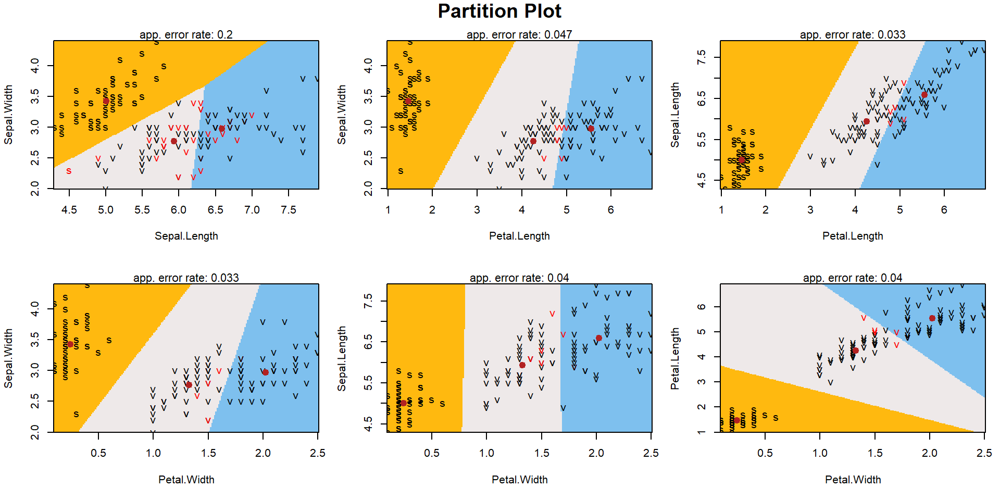Métricas para clasificación
En problemas de clasificación, existen un gran número de métricas para evaluar el desempeño de un modelo. Por ejemplo, para el ejemplo de morosidad:
library(caret)
confusionMatrix(table(predict(logit2, type="response") >= 0.5, data$default == "Yes"))Confusion Matrix and Statistics
FALSE TRUE
FALSE 9627 228
TRUE 40 105
Accuracy : 0.9732
95% CI : (0.9698, 0.9763)
No Information Rate : 0.9667
P-Value [Acc > NIR] : 0.0001044
Kappa : 0.4278
Mcnemar's Test P-Value : < 2.2e-16
Sensitivity : 0.9959
Specificity : 0.3153
Pos Pred Value : 0.9769
Neg Pred Value : 0.7241
Prevalence : 0.9667
Detection Rate : 0.9627
Detection Prevalence : 0.9855
Balanced Accuracy : 0.6556
'Positive' Class : FALSE
Métricas para clasificación: continuación
La función confusionMatrix() nos entrega la matriz de confusión junto con varias métricas asociadas. Esta matriz en su forma más esencial es:
Análisis discriminante cuadrático
El análisis discriminante cuadrático es una alternativa a LDA, en la que se asumía distribución normal e igual varianza en cada una de las clases. Si bien, en el análisis discriminante cuadrático (QDA) también se asume que los datos provienen desde una distribución normal y estima los parámetros para predecir. Sin embargo, el QDA asume que cada clase tienen su propia matriz de covarianza.
Esto es, se asume que una observación proveniente de la clase \(k-\)ésima es de la forma \(X\sim N(\mu_k,\Sigma_k)\), donde \(\Sigma_k\) es la matriz de covarianza para la clase \(k-\)ésima.
Análisis discriminante cuadrático: continuación
Bajo estos supuestos, el clasificador bayesiano asigna una observación \(X=x\) a la clase en la que
\[\begin{align*} \delta_k(x)&=-\dfrac{1}{2}(x-\mu_k)^{T}\Sigma_{k}^{-1}(x-\mu_k)+\log \pi_k \\ &=-\dfrac{1}{2}x^{T} \Sigma_{k}^{-1}x+x^{T}\Sigma_{k}^{-1}\mu_k-\dfrac{1}{2}\mu_{k}^{T}\mu_k+\log \pi_k \end{align*}\]es mayor. Así, se requerirá estimar \(\Sigma_k,\mu_k\) y \(\pi_k\). El nombre de cuadrático viene debido a que \(x\) aparece como una función cuadrática en la ecuación anterior.
¿LDA o QDA?
Si tenemos \(p\) predictores, estimar la matriz de covarianza requiere estimar \(p(p+1)/2\) parámetros. En el caso de QDA se estima una matriz de covarianza para cada clase, por lo que se deben estimar \(Kp(p+1)/2\) parámetros. Si asumimos que las \(K\) clases comparten la misma matriz de covarianza, el modelo de LDA es lineal en \(x\), lo que significa que se debe estimar \(Kp\) parámetros.
En general, el discriminante lineal es menos flexible que su contraparte cuadrática, y tiene una varianza sustancialmente menor. Sin embargo, si el supuesto de igualdad de matrices de covarianza entre las clases es erróneo, provocará que el discriminante lineal tenga un enorme sesgo.
¿LDA o QDA?: continuación
Usualmente, LDA tiende a ser mejor que QDA si se tienen pocas observaciones en el conjunto de entrenamiento, por lo que reducir la varianza es particularmente importante.
En contraste, QDA es recomendado si el conjunto de entrenamiento es grande, de manera que la varianza del clasificador no sea tan relevante, o si el supuesto de igual matriz de covarianza en las distintas clases es claramente insostenible.
¿LDA o QDA?: continuación
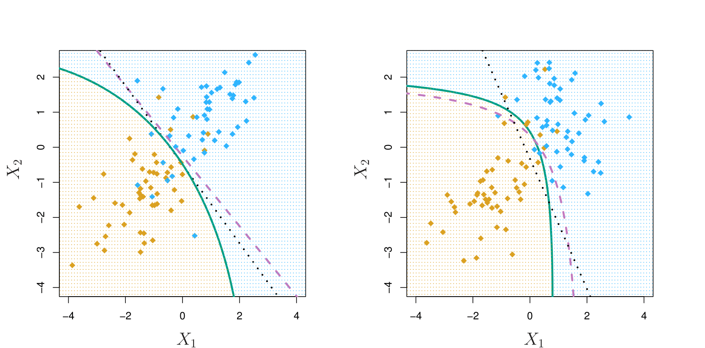¿Qué veremos la próxima semana?
- Métodos supervisados: continuación
¿Que deben preparar para la próxima semana?
- Capítulo 3 , Hands-On Machine Learning with Scikit-Learn, Keras, and TensorFlow: Concepts, Tools, and Techniques to Build Intelligent Systems. Géron, Aurélien.
- Capítulo 4, An Introduction to Statistical Learning with Applications in R.
IND 163 - Semana 7